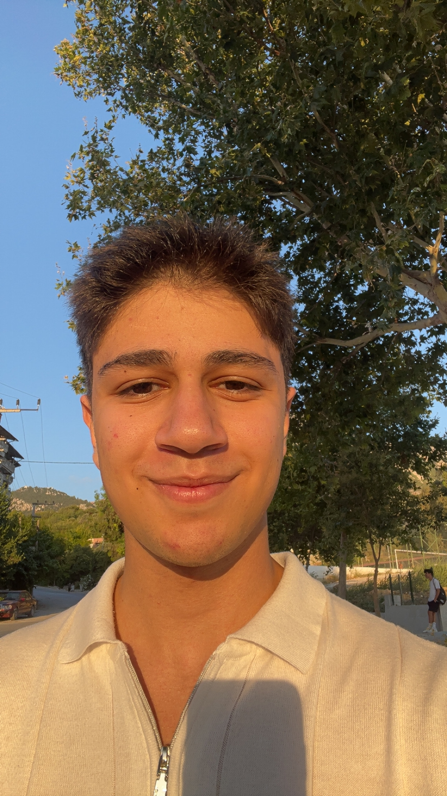

Eymen BULANIK
Science & Mathematics Student | Robotics Team Leader | Professional Pianist
Discover My Journey Launch My AppAbout Me
A multi-talented student passionate about robotics, music, and community service

Hi! I’m Eymen Bulanık, born on June 19, 2008, and currently studying on a full scholarship at Hatay Doga Schools in the Science and Mathematics track. My world revolves around engineering, robotics, and music — all the things that make me curious about how ideas turn into reality.
As a team leader in several robotics competitions including Robotex and Fibonacci International, I’ve guided my teams to international success, earning 2nd place worldwide. Beyond competing, I manage public relations for our FRC team and co-founded our robotics social media page to share what we create and learn.
Music has been part of my life since 5th grade. I’m a professional pianist, and I taught myself to play the drums, guitar, and ukulele just by experimenting and listening. Performing at school concerts and events has always been more than music to me — it’s a way to connect with people and use art to bring joy or raise help when it’s needed most.
Community service is another thing that keeps me grounded. I’ve organized concerts to support earthquake victims, volunteered with children with cancer, and helped run STEM workshops for village schools. These moments remind me how creativity, empathy, and technology can come together to make something meaningful.
I’m still learning, still exploring, and still trying to understand how far this journey can go. Every project, every song, every new idea feels like another step forward — and I can’t wait to see where it takes me next. Explore My WorkEducation
Academic excellence with consistent high achievement
Science-Mathematics Track
Hatay Bahçeşehir Science and Technology High School & Doga High School
Current Student - Expected Graduation: 2026
Academic Scholarship: 100% Merit-based Scholarship
Academic Performance: Certificate of High Achievement since 4th Grade (GPA 85+)
Recent Honors: Academic Honor Certificate (10th-11th Grade), Certificate of Excellence (11th Grade)
Focus Areas: Science, Mathematics, Technology, Engineering, Robotics, Leadership
Location: Gülderen, Antakya/Hatay/Turkey
Projects & Leadership
Leading robotics teams and organizing community impact initiatives
T-MBA Team Leadership & Community Service
Leader of school project team "T-MBA" organizing multiple fundraising concerts and events. Organized 2 concerts after earthquake to help college students, and events for National Children's Day, Youth and Sports Day. Organized spring festival concert, donating all proceeds to earthquake zone students in need.
Fibonacci International Robotics Championship
Led robotics team to 2nd place in Fibonacci International Finals in entrepreneurship category. As team leader, coordinated strategy, design, and implementation while managing team dynamics and competition preparation for this prestigious international competition.
Robotex Turkey Regional & National Championships
Led school's Robotex team achieving 2nd place in Turkey Regionals and Jury's Special Award in Turkey Finals, both in entrepreneurship category. Managed team strategy, technical development, and presentation skills for national-level competition success.
FRC Team - Team Captain & Community Outreach
Head of Public Relations for FRC team, organizing STEM Week at secondary school to teach robotics programming. Led "One Wish to Children" project visiting village school to fulfill children's wishes. Sold team designs for fundraising activities.
Model United Nations (MUN) Leadership
Active MUN participant winning Outstanding Award at DogaMun. Served as co-chair at Hatay DMUN receiving Certificate of Appreciation for academy and organization contributions. Champion of yearly debates at both Bahçeşehir and Doga schools.
Social Media & Sponsorship Management
Co-founded Instagram page for robotics team building community engagement. Successfully found sponsors for Robotex, Fibonacci, FRC and T-MBA teams. Managed team promotion and sponsor relations across multiple competitive robotics platforms.
Awards & Skills & Licenses
Academic excellence, competition victories, and community service recognition
Academic Excellence Awards
📚 Certificate of High Achievement (4th Grade-Present) for GPA 85+, Academic Honor Certificate (10th-11th Grade), and Certificate of Excellence (11th Grade) for outstanding academic performance and consistent high achievement.
Musical Expertise
🎵 Professional pianist since 5th grade performing in numerous school concerts and community events. Also proficient in drums, guitar, and ukulele, using musical talents for fundraising and community service activities.
Robotics & Engineering
🤖 Extensive experience leading robotics teams in Robotex, Fibonacci, and FRC competitions. Skilled in robot programming, team management, and competitive strategy development for international competitions.
Languages & Communication
🇺🇸 Fluent in English and native Turkish speaker. Excellent communication skills demonstrated through Model UN participation, debate championships, and public speaking at various events and conferences.
Sports & Dance Achievements
💃 Licensed volleyball and chess player, and passionate dancer specialized in Waltz. Champion of Bahçeşehir Hatay Volleyball Competition, 1st place in Hatay Doga Chess Competition, and performer in multiple school waltz showcases combining rhythm, strategy, and teamwork.
Community Service Recognition
❤️ Certificate of Honor from LÖSEV for volunteering with children with cancer and Certificate of Honor from Doga Hatay for voluntary piano performances at multiple events. Recognized for exceptional community service.
Get In Touch
Connect with me for collaborations, projects, or opportunities
For academic collaborations, robotics projects, music performances, or any professional opportunities, feel free to reach out via email.
📱 Phone
For urgent inquiries, team collaborations, or event bookings, you can contact me directly via mobile phone.
🌍 Location
Based in Gülderen, Antakya/Hatay/Turkey. Currently studying at Hatay Bahçeşehir Science and Technology High School. Available for local collaborations and remote projects.
📺 My Socials
For other inquiries you can contact me by my personal social media accounts.